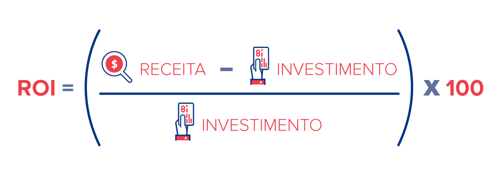

Renda fixa é todo tipo de investimento que tem regras de rendimento definidas antes. Na hora de aplicar, o investidor já fica sabendo o prazo e a taxa de rendimento ou o índice que será usado para valorizar o dinheiro investido.
Ou seja, apesar de ser um investimento, eles são conhecidos como os investimentos seguros. Com eles, é possivel investir com grande segurança, porem, muitas vezes, com rendimentos abaixo do mínimo esperado em um investimento (mínimo esperado em um investimento é 1%).
Rentabilidade é o percentual de ganho a partir do valor que foi investido.
Ela é uma das partes essenciais de um investimento, juntamente com a segurança, a taxa de juros e a liquedez. Como dito, normalmente ela é dada em porcentagem, é por meio dela que é possível calcula-se o quanto a pessoa vai ganhar em um investimento.
Normalmente, a rentabilidade é calculada por meio do ROI (Retorno sobre Investimento) que vai nos indicar o returno imediato da aplicação. 
Outra coisa que se precisa observar nos investimentos de renda fixa é a taxa de juro. A taxa de juro é a porcentagem que vai definir a rentabilidade de um investimento, pois é por meio dela que se calcula o retorno e o quanto vai retornar em um investimento.
Ao contrario das dívidas, em que a taxa de juros é sua principal inimiga, nos investimentos ela é sua principal aliada e parceira de seu sucesso.
A taxa de juros, na renda fixa, são normalmente considerados baixos, pois, apesar de serem muito usados, a porcentagem é justificada pela segurança, que normalmente é maior do que os investimentos de renda variavel. Apesar disso, são otimos investimento para quem vai começar a investir agora ou/e para pessoas que são mais conservadoras que preferem a segurança aos autos lucros.
A segurança de um investimento está atrelada ao risco que ela oferece. Logo de início, é preciso compreender que não existe investimento completamente isento de riscos. Porém, algumas alternativas se mostram mais seguras que outras.
A renda fixa é conhecida por sua segurança. Nela, é possível conhecer o comportamento de remuneração, então há maior previsibilidade no investimento. O contrário ocorre com a renda variável, em que isso não acontece e, portanto, acaba apresentando mais riscos, porque os ganhos são incertos. Dessa forma, pode-se perceber que a rentabilidade normalmente esta ligada a segurança, porem sendo inversamente propocional a ela, não significa não exista investimentos com auta segurança e rentabilidade acima do esperado.
.jpeg)
A liquidez é uma medida utilizada para determinar a facilidade e a velocidade com que o investidor consegue se desfazer de um ativo sem comprometer a quantia investida - ou seja, sem obter prejuízo.
Como não existe uma escala científica que a delimite, os ativos são categorizados como de baixa, média ou alta liquidez a partir de uma percepção convencionada do mercado financeiro.
Como não existe uma escala científica que a delimite, os ativos são categorizados
Como a liquidez é uma forma inerente a todo investimento só se mede por meio do tempo que você pode usa-lo sem perder rentabilidade. No caso, dos investimentos de renda fixa a liquidez é baixa ou média, pois a maioria tem rentabilidade para longo ou longuissimo prazo (ex. 5 anos), com exeção de alguns que tem liquidez diaria ou ate mensal.
Dessa forma, esses rendimentos são indicados para quem prefere fazer um planejamento a longo ou longuíssimo prazo onde reside os maiores rendimentos.